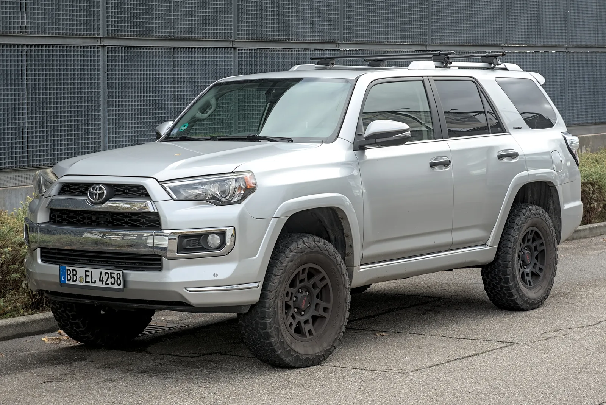
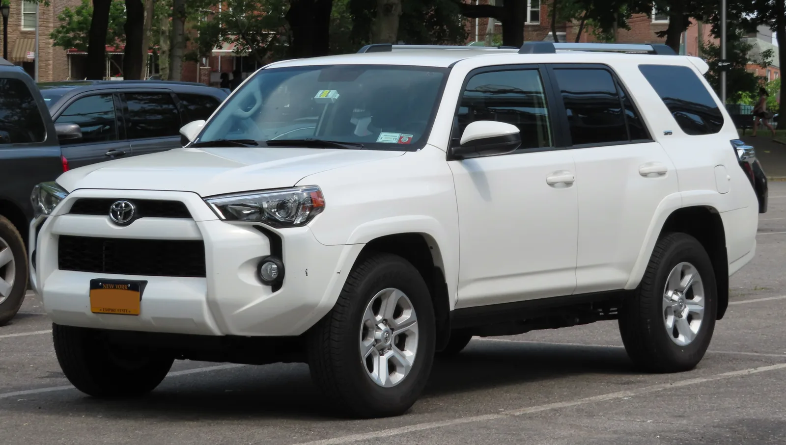
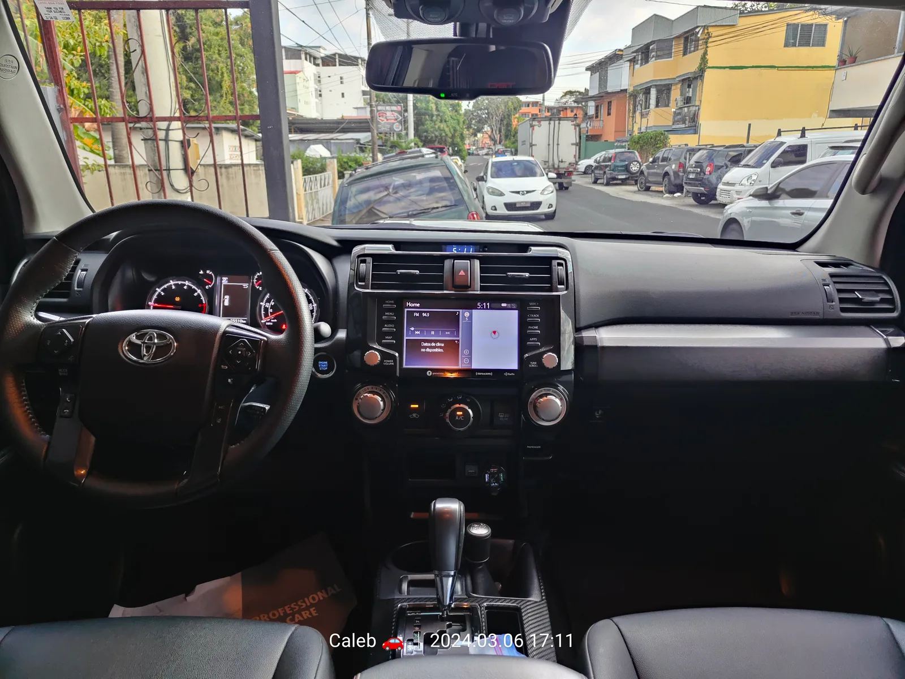
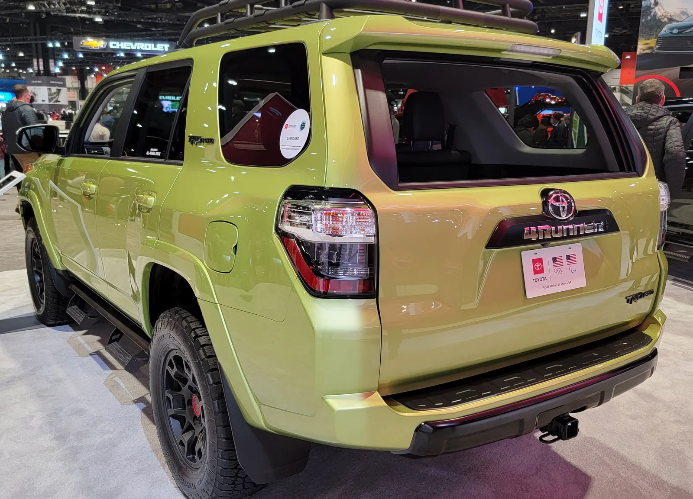
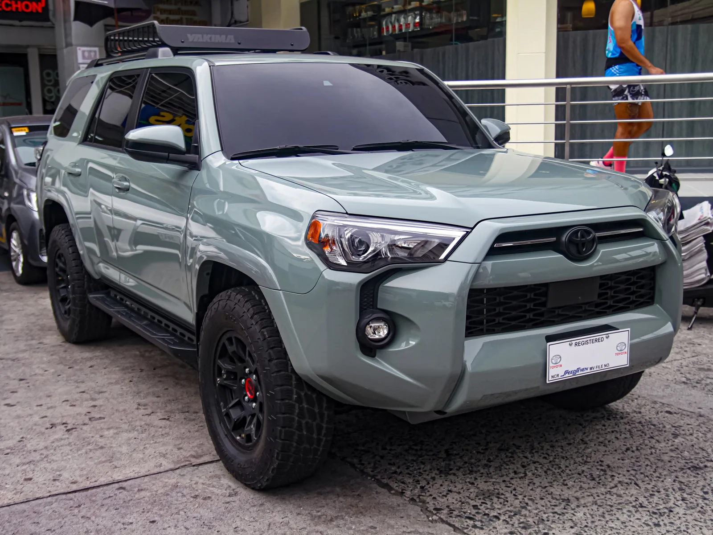
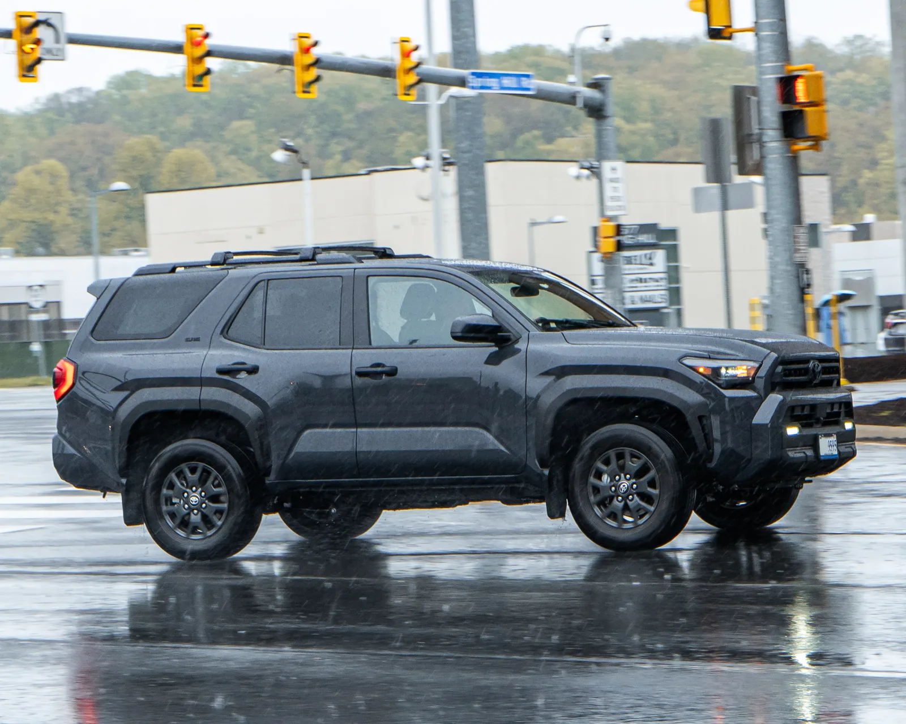

▲ 5세대 토요타 4러너(2010~2024년형)가 JD파워 차량내구품질조사에서 신형 SUV들을 제치고 공동 1위에 올랐다
1. 구형 파워트레인이 신형을 이겼다
터보차저도, 하이브리드 시스템도 없는 자연흡기 V6 엔진과 5단 자동변속기. 요즘 기준으로는 다소 '구식'으로 보일 법한 구성이지만, 이 단순함이 오히려 최고의 무기가 됐다. 카버즈(CarBuzz) 보도에 따르면, 2024년형까지 생산된 5세대 토요타 4러너가 미국의 권위 있는 소비자 조사기관 JD파워(J.D. Power)의 차량내구품질조사(Vehicle Dependability Study)에서 어퍼미드사이즈 SUV 부문 공동 1위(tied for the top spot)에 올랐다.
2. JD파워 내구품질조사란
JD파워 차량내구품질조사는 신차 구매 후 초기 품질이 아니라, 3년간 실제 사용한 차주들의 응답을 바탕으로 장기 내구성을 측정하는 조사다. 신차 출고 직후의 결함이 아니라 수년간 타면서 누적되는 고장·이상 증상을 반영하기 때문에, 업계에서는 '진짜 신뢰성'을 가늠하는 지표로 평가받는다. 2026년 조사는 2023년형 차량 구매자 3만3,268명의 응답을 바탕으로, 2024년 12월부터 2025년 11월까지 진행됐다.
카버즈에 따르면 올해 조사에서 업계 전체의 평균 문제 발생률은 차량 100대당 204건으로 집계됐다. 인포테인먼트 결함과 무선(OTA) 업데이트 불안정, 외장 부품 문제 등이 겹치며 역대 최고 수준까지 치솟았다는 설명이다. 이런 상황에서 5세대 4러너는 어퍼미드사이즈(upper-midsize) SUV 부문에서 뷰익 인클레이브와 나란히 공동 1위에 올랐다.

▲ 2010년부터 2024년형까지 생산된 5세대 4러너는 바디온프레임 구조와 기계식 사륜구동 부품을 그대로 유지했다 ⓒ Alexander Migl / Wikimedia Commons (CC BY-SA 4.0)
3. 왜 '단순한' V6가 강점이 됐나
5세대 4러너의 심장은 자연흡기 4.0리터 V6 엔진이다. 최고출력 270마력, 최대토크 278lb-ft(약 37.7kgf·m)를 낸다. 카버즈는 이 엔진에 대해 "4러너에 필요한 만큼의 힘은 충분히 내면서도, 엔진에 과도한 부담을 주지 않는 수준"이라고 평가했다. 터보차저나 복잡한 하이브리드 시스템 없이, 강제 흡기 장치의 도움을 받지 않고도 필요한 출력을 만들어낸다는 것이다.

▲ 자연흡기 4.0L V6는 270마력·278lb-ft를 내며 터보나 하이브리드 없이도 4러너에 충분한 힘을 공급했다 ⓒ Kevauto / Wikimedia Commons (CC BY-SA 4.0)
변속기 역시 마찬가지다. 요즘 신차들이 8단, 9단, 심지어 10단 자동변속기를 흔히 쓰는 것과 달리, 5세대 4러너는 5단 자동변속기를 고수했다. 기어 단수가 적을수록 구조가 단순해지고, 그만큼 고장 날 수 있는 부품 수도 줄어든다는 게 카버즈의 분석이다. 여기에 바디온프레임 차체와 기계식 사륜구동 부품까지 더해지며, 전자장비 의존도가 낮은 '아날로그에 가까운' 구성이 오히려 장기 내구성에서 강점으로 작용했다.

▲ 물리 버튼과 다이얼 위주의 실내 구성도 전자장비 의존도를 낮춘 '아날로그' 접근의 일부였다 ⓒ Iamjosemon / Wikimedia Commons (CC BY 4.0)
📍 수리비용으로 보는 신뢰성
카버즈에 따르면 5세대 4러너의 10년간 예상 수리비용은 약 6,492달러로, 시장 평균인 8,208달러보다 약 1,700달러 낮다. 연간 유지비도 약 514달러 수준으로 집계됐다.

▲ 4.0L V6와 5단 자동변속기, 바디온프레임 구조로 대표되는 5세대 4러너의 단순한 구성이 장기 내구성의 비결로 꼽혔다 ⓒ UltraTech66 / Wikimedia Commons (CC BY-SA 4.0)
4. 감가상각까지 방어하는 신뢰성 프리미엄
내구성에 대한 신뢰는 중고차 시장 가치로도 이어진다. 카버즈는 5세대 4러너가 5년 후에도 잔존가치의 74~75%를 유지(가치 하락 폭 25~26%에 불과)한다고 전했다. 일반적인 SUV들의 감가상각 폭을 크게 밑도는 수준으로, 검증된 신뢰성 공식에 대한 구매자들의 수요가 여전히 견고하다는 방증이라는 설명이다.
5. 6세대는 다른 길을 걷는다
하지만 이런 '단순함의 미학'은 2025년형부터 자취를 감췄다. 토요타는 6세대 4러너부터 기존 자연흡기 V6를 터보차저가 달린 2.4리터 4기통 엔진(278마력)으로 교체했고, 최고 323~326마력을 내는 i-포스 맥스(i-FORCE MAX) 하이브리드 옵션도 새로 추가했다. 변속기도 5단에서 8단 자동변속기로 단수를 늘렸다. 배출가스 규제 강화와 연비 효율 요구가 이런 변화를 이끈 핵심 배경으로 꼽힌다.
✅ 5세대 vs 6세대 4러너, 무엇이 달라졌나
· 5세대(2010~2024년형): 자연흡기 4.0L V6(270마력), 5단 자동변속기
· 6세대(2025년형~): 터보 2.4L 4기통(278마력) + i-포스 맥스 하이브리드(최고 약 326마력), 8단 자동변속기
· 변화 배경: 배출가스 규제, 연비 효율 요구
· 카버즈 시각: 새 파워트레인은 복잡성이 늘어난 만큼, 아직 검증되지 않은 장기 내구성이 신뢰성을 중시하는 구매자들의 관심사로 남아 있다

▲ 6세대부터는 터보 4기통과 하이브리드가 5세대의 자연흡기 V6를 대체했다. 새 파워트레인의 장기 내구성은 아직 검증되지 않았다 ⓒ Ethan Llamas / Wikimedia Commons (CC BY-SA 4.0)

▲ 새 플랫폼(TNGA-F)을 쓰는 6세대 4러너(N500)는 터보 4기통과 하이브리드로 파워트레인을 전면 교체했다 ⓒ OWS Photography / Wikimedia Commons (CC BY 4.0)
카버즈 원문 기사는 아래에서 확인할 수 있다. CarBuzz 원문 바로가기
6. 요약
5세대 토요타 4러너(2010~2024년형)가 JD파워 차량내구품질조사 어퍼미드사이즈 SUV 부문에서 뷰익 인클레이브와 함께 공동 1위에 올랐다. 업계 평균 문제 발생률이 100대당 204건으로 역대 최고 수준에 달하는 가운데 거둔 성과다.
자연흡기 4.0L V6(270마력)와 5단 자동변속기, 바디온프레임 구조라는 단순한 구성이 강점으로 꼽혔으며, 10년 수리비용도 약 6,492달러로 시장 평균(8,208달러)보다 낮았다. 5년 후 잔존가치 역시 74~75% 수준으로 감가상각 방어력도 뛰어났다.
다만 2025년형부터 도입된 6세대는 터보 4기통과 하이브리드로 파워트레인을 바꿨다. 배출가스 규제와 연비 효율 요구에 따른 변화지만, 복잡성이 늘어난 만큼 장기 내구성 검증은 이제부터가 시작이라는 평가다.